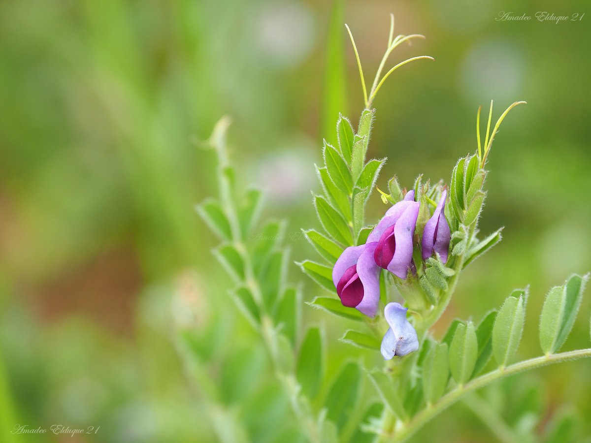
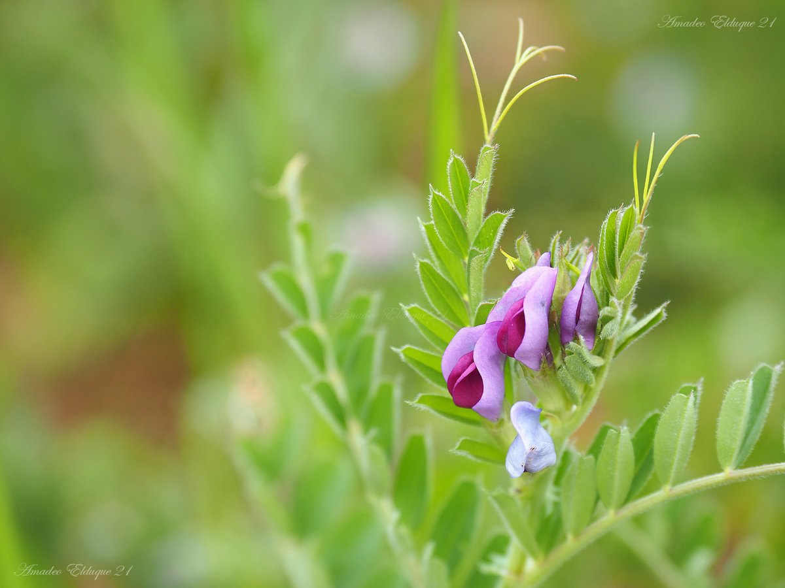

Flores que más atraen a los polinizadores
Vos también podes crear tu propio espacio para salvar a las abejas, donde ellas y otros insectos polinizadores puedan encontrar el refugio y el polem para alimentarse. Planta flores amigas de las abejas en el jardín o en el balcón sin usar plaguicidas químicos. Hay muchas plantas y flores que son muy apreciadas por las abejas. Aquí tenes algunas de las variedades que pueden ofrecer una buena comida a estos insectos tan importantes:

 
